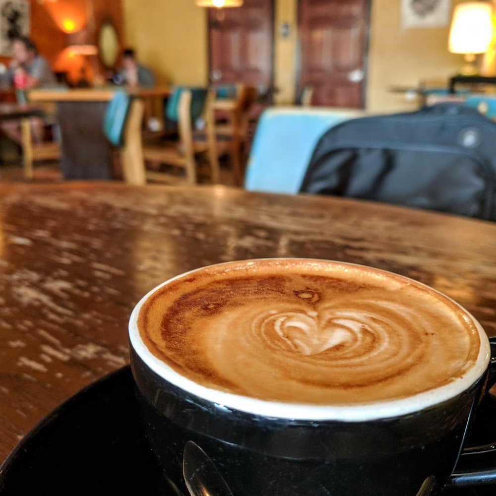

<!doctype html><meta charset="utf-8"><meta name="viewport" content="width=device-width,initial-scale=1"><title>Ditto composition B</title><link rel="stylesheet" href="style.css"><main class="phone b"><header class="top"><b class="logo">ditto</b><span>Austin · +</span></header><section class="tools"><h1>Discover</h1><button>Food　<svg xmlns="http://www.w3.org/2000/svg" width="22" height="22" viewBox="0 0 24 24" fill="none" stroke="currentColor" stroke-width="2" stroke-linecap="round" stroke-linejoin="round" class="lucide lucide-sliders-horizontal" aria-hidden="true"><line x1="21" x2="14" y1="4" y2="4"></line><line x1="10" x2="3" y1="4" y2="4"></line><line x1="21" x2="12" y1="12" y2="12"></line><line x1="8" x2="3" y1="12" y2="12"></line><line x1="21" x2="16" y1="20" y2="20"></line><line x1="12" x2="3" y1="20" y2="20"></line><line x1="14" x2="14" y1="2" y2="6"></line><line x1="8" x2="8" y1="10" y2="14"></line><line x1="16" x2="16" y1="18" y2="22"></line></svg></button></section><div class="intro"><h1>Coffee &<br>good company</h1><p>Epoch Coffee · Sunday, 11:30 AM</p></div><article class="card"></article><div class="details"><span>Food · With Alex</span><b>Details</b></div><div class="decisions"><button aria-label="Undo"><svg xmlns="http://www.w3.org/2000/svg" width="22" height="22" viewBox="0 0 24 24" fill="none" stroke="currentColor" stroke-width="2" stroke-linecap="round" stroke-linejoin="round" class="lucide lucide-rotate-ccw" aria-hidden="true"><path d="M3 12a9 9 0 1 0 9-9 9.75 9.75 0 0 0-6.74 2.74L3 8"></path><path d="M3 3v5h5"></path></svg></button><button aria-label="Pass"><svg xmlns="http://www.w3.org/2000/svg" width="22" height="22" viewBox="0 0 24 24" fill="none" stroke="currentColor" stroke-width="2" stroke-linecap="round" stroke-linejoin="round" class="lucide lucide-x" aria-hidden="true"><path d="M18 6 6 18"></path><path d="m6 6 12 12"></path></svg></button><button aria-label="Ditto"><svg xmlns="http://www.w3.org/2000/svg" width="22" height="22" viewBox="0 0 24 24" fill="none" stroke="currentColor" stroke-width="2" stroke-linecap="round" stroke-linejoin="round" class="lucide lucide-heart" aria-hidden="true"><path d="M19 14c1.49-1.46 3-3.21 3-5.5A5.5 5.5 0 0 0 16.5 3c-1.76 0-3 .5-4.5 2-1.5-1.5-2.74-2-4.5-2A5.5 5.5 0 0 0 2 8.5c0 2.3 1.5 4.05 3 5.5l7 7Z"></path></svg></button></div><p class="hint">Swipe to decide. Ditto saves interest.</p><nav class="nav"><a href="#"><svg xmlns="http://www.w3.org/2000/svg" width="22" height="22" viewBox="0 0 24 24" fill="none" stroke="currentColor" stroke-width="2" stroke-linecap="round" stroke-linejoin="round" class="lucide lucide-compass" aria-hidden="true"><path d="m16.24 7.76-1.804 5.411a2 2 0 0 1-1.265 1.265L7.76 16.24l1.804-5.411a2 2 0 0 1 1.265-1.265z"></path><circle cx="12" cy="12" r="10"></circle></svg>Discover</a><a href="#"><svg xmlns="http://www.w3.org/2000/svg" width="22" height="22" viewBox="0 0 24 24" fill="none" stroke="currentColor" stroke-width="2" stroke-linecap="round" stroke-linejoin="round" class="lucide lucide-users" aria-hidden="true"><path d="M16 21v-2a4 4 0 0 0-4-4H6a4 4 0 0 0-4 4v2"></path><circle cx="9" cy="7" r="4"></circle><path d="M22 21v-2a4 4 0 0 0-3-3.87"></path><path d="M16 3.13a4 4 0 0 1 0 7.75"></path></svg>Circles</a><a href="#"><svg xmlns="http://www.w3.org/2000/svg" width="22" height="22" viewBox="0 0 24 24" fill="none" stroke="currentColor" stroke-width="2" stroke-linecap="round" stroke-linejoin="round" class="lucide lucide-calendar-days" aria-hidden="true"><path d="M8 2v4"></path><path d="M16 2v4"></path><rect width="18" height="18" x="3" y="4" rx="2"></rect><path d="M3 10h18"></path><path d="M8 14h.01"></path><path d="M12 14h.01"></path><path d="M16 14h.01"></path><path d="M8 18h.01"></path><path d="M12 18h.01"></path><path d="M16 18h.01"></path></svg>Plans</a><a href="#"><svg xmlns="http://www.w3.org/2000/svg" width="22" height="22" viewBox="0 0 24 24" fill="none" stroke="currentColor" stroke-width="2" stroke-linecap="round" stroke-linejoin="round" class="lucide lucide-user-round" aria-hidden="true"><circle cx="12" cy="8" r="5"></circle><path d="M20 21a8 8 0 0 0-16 0"></path></svg>Profile</a></nav></main>